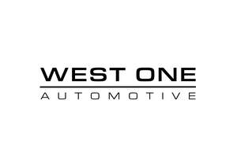
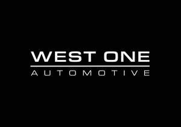

Trade Mark Journal No.2025/024 13 June 2025
UK00004195473 28 April 2025 (9,12,16,25,35,36,37,38,39,41,42,45)
Mark 1

Mark 2

- Class 9
- Downloadable software and mobile applications for vehicle search, leasing, rental, chauffeur booking, and car part browsing; artificial intelligence-powered virtual assistants for automotive consultation and customer engagement (including AutoGPT); near-field communication (NFC) technology for automotive product interaction and smart printed media; virtual and augmented reality platforms for vehicle showrooms and modifications; downloadable software for financial calculations, quote generation, booking management, and CRM; downloadable audio and video media content including podcast episodes, interviews, and branded automotive programming. Downloadable vehicle maintenance trackers, servicing reminders, and MOT scheduling software.
- Class 12
- Vehicles; parts and fittings for land vehicles; custom wheels, body kits, exhaust systems, interior accessories, lighting, and trims; performance enhancement products and modifications for vehicles; aftermarket automotive components and OEM replacement parts.
- Class 16
- Printed publications, brochures, leaflets, and booklets relating to vehicle leasing, rental, finance, sales, and styling; printed training materials, manuals, and handover documentation; business stationery; promotional materials including printed advertising, flyers, and event invitations; vehicle specification sheets and proposal documents; branded office supplies including folders, business cards, and letterheads; NFC-enabled printed materials including interactive brochures, smart business cards, and connected vehicle handover documents.
- Class 25
- Clothing, footwear, and headwear; branded apparel including T-shirts, hoodies, jackets, caps, and luxury fashion items; lifestyle merchandise bearing the West One Automotive brand; promotional garments and accessories for events and automotive campaigns.
- Class 35
- Retail and online retail services relating to the sale and leasing of new vehicles and aftermarket automotive parts; vehicle sourcing and brokering services; advertising, marketing, and promotional services in the automotive industry; automotive marketing consultancy and campaign management; production of advertising content for vehicle dealerships and manufacturers; social media strategy and content creation for vehicle promotions; business management consultancy relating to automotive sales; lead generation and referral services for car dealers and finance providers; operation and management of a members club offering exclusive automotive access, events, and benefits to private clients. Networking and business introductions for members club participants.
- Class 36
- Provision of credit brokering services relating to vehicle leasing and financing; financial consultancy for individuals and businesses regarding vehicle acquisition; intermediary services between customers, vehicle dealerships, and finance companies; advisory and administrative services for automotive credit applications; facilitation of lease and purchase agreements for vehicles; provision of vehicle-related accountancy services; tax advisory for company car schemes, fleet write-downs, and vehicle acquisition strategies; consultancy relating to the maximisation of tax benefits through leasing, business use, or vehicle structuring; introduction to automotive financial products and services provided by third-party lenders or institutions. Financial consultancy and credit brokering services relating to maintenance packages, vehicle servicing plans, and warranty-inclusive finance products including personal contract purchase (PCP) and lease agreements; introduction to third-party maintenance providers .
- Class 37
- Vehicle customisation services including installation of performance parts, body kits, and aesthetic upgrades; fitting of branded accessories and aftermarket components; vehicle wrapping, detailing, tinting, paint protection, and interior styling services; repair and maintenance of modified or high-performance vehicles. Vehicle maintenance services including servicing, repairs, mechanical inspections, and MOT preparation; end-of-lease vehicle preparation, including cosmetic repairs, valeting, and maintenance checks; installation and fitting of vehicle parts, performance accessories, and aftermarket components; wrapping, detailing, tinting, paint protection, and aesthetic customisation of vehicles.
- Class 38
- Broadcasting, transmission, and streaming of audio and video content; podcast production and distribution services; transmission of podcasts, webinars, video-on-demand, and live-streamed events via global computer networks, mobile devices, and digital platforms; telecommunications services for online meetings, webinars, and virtual networking events; provision of online forums, chat rooms, and interactive media platforms for communication among podcast listeners, club members, and event participants. Broadcasting and streaming of audio and video content including podcasts, webinars, interviews, video-on-demand, and live-streamed events; telecommunications services for the delivery of digital content, interactive media, and virtual networking sessions; podcast hosting and distribution services; provision of online chat rooms, digital forums, and messaging platforms for members club participants, podcast listeners, and event attendees.
- Class 39
- Provision of luxury chauffeur services; transportation of passengers in high-end vehicles; executive mobility services for corporate and VIP clients; short-term and long-term car rental services; car hire services with online and app-based booking functionality; vehicle delivery and collection services for sold, leased, or rented automobiles; fleet logistics and vehicle movement services; event-based chauffeuring and vehicle logistics support; concierge-style automotive services including personalised vehicle sourcing, white-glove delivery, and exclusive handover experiences. Vehicle delivery, collection, and transport services for maintenance, servicing appointments, and end-of-lease handovers; concierge services for vehicle logistics management, including preparation and transportation for vehicle returns or servicing.
- Class 41
- Education and training services in the field of automotive sales, leasing, credit brokering, rental, and finance; provision of instructional content and workshops relating to vehicle procurement, styling, and client consultation; digital training sessions and webinars for automotive software, AI platforms, and customer onboarding (including AutoGPT); organisation and hosting of vehicle-related events, launch showcases, and branded marketing activations; production and distribution of podcasts, interviews, and educational media content covering the automotive sector.
- Class 42
- Design and development of downloadable and cloud-based software for automotive finance, leasing, rental, part selection, and chauffeur booking; software as a service (SaaS) platforms for vehicle selection, booking journeys, and automated customer support; development of artificial intelligence systems for customer consultation and car booking (including AutoGPT); creation and maintenance of backend portals and analytics dashboards for customers and dealers; technology consulting services in the mobility and automotive sectors.
- Class 45
- Legal and regulatory support services relating to vehicle leasing, rental, and automotive finance; preparation and administration of vehicle sale, hire, and lease agreements; legal advisory services connected with credit brokering, vehicle procurement, and modification services; concierge-style assistance for contract finalisation, document submission, and regulatory compliance; verification and identity-check support for luxury automotive customers.
Mohammed Ruhel Uddin